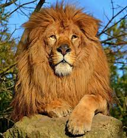
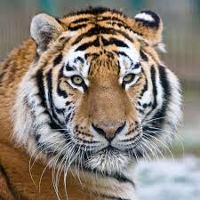

Изумительные животные

Лев
Лев - это король зверей, символ мощи и силы. Он является одним из наиболее узнаваемых и популярных млекопитающих в мире.

Слон
Слон - это крупное травоядное животное с длинным хоботом и массивными клыками. Слон - это одни из самых умных и социальных животных на планете. Они также являются важной частью многих культур и религий.

Тигр
Тигр - это крупное хищное животное, известное своей красивой окраске и изящной силе. Он является одним из наиболее угрожающих и захватывающих видов на планете.